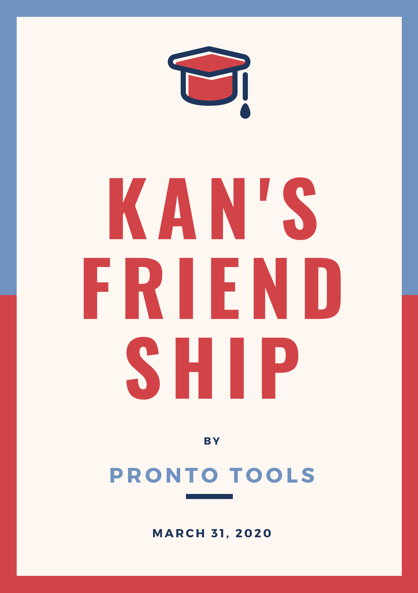
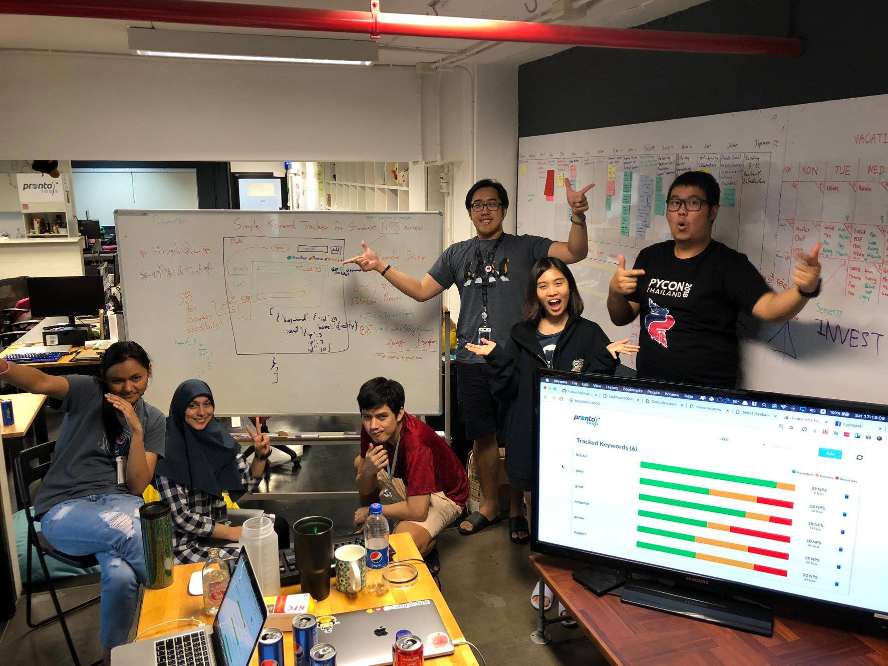

Forever ❤️


ถึง...P'zkan
สวัสดีค่ะ รู้สึกดีใจที่ได้เข้ามาฝึกงานในทีมแบร์ มายด์รู้สึกว่า ทีม นี้ แข็งแกร่งจริงๆ ในเรื่องของ culture ในช่วง 2 วันแรกที่เข้ามาฝึก จำได้ว่า พี่กานต์ พูดกับพี่บอบอ
ว่า คุณมาฝึกงานหรือป่าวครับ ? คำนั้นเป็นคำที่เตือนสติมายด์ได้ดี จนถึงวันนี้ skill ต่างๆ ที่เพิ่มขึ้น ส่วนหนึ่งมาจากประโยคที่พี่พูดในวันนั้นค่ะ
ขอบคุณสำหรับการปิด sprint สุดท้ายที่สวยงาม และขอบคุณสำหรับโอกาสดีดีในทุกๆ เรื่องนะคะ
N'Mild 🌻

Dear, P' zkan
หวัดดีพี่กานต์ ขอบคุณพี่มากๆ ในทุกๆ เรื่องเลย ตั้งแต่พี่แชร์ blog medium ของข้าวตูครั้งแรกมันทำให้ ข้าวตูรู้สึกมีแรงผลักดัน555 ว่ามีคนเก่งๆ มาแชร์ blog เราด้วย ตั้งแต่มาฝึกงานที่ Prontotools มันได้อะไรหลายๆ อย่างจริงๆ มากจนฝอยไม่หมดด 🙀 สุดท้ายขอให้พี่โชคดีมีชัยนะครัชชช 😎
Kaotu 🌚

จากใจหน่องปอยถึงพี่กานต์

ขอบคุณนะคะที่คอยดูแลน้องๆมาตลอด ตั้งแต่วันแรกที่ได้ร่วมทีม สอนพื้นฐานมากมาย ก้าวแรกที่เข้าทีมก็ต้องเริ่ม KATA กันก่อน ทำให้นึกถึงพี่กานเลย ดีใจมากกกที่ได้เป็นส่วนหนึ่งในทีม Pronto Tools ค่าา ชอบ mindset team และสนุกกับการเขียนโค้ดมากค่ะ ขอให้พี่กาน Geek ขึ้นมากๆค่ะ 5555 🙏🏻😘

from... anpan

สวัสดีครับพี่กานต์
🍩🍩🍩🍩 Nat 🍩🍩🍩🍩
To, P' Kan 🐻
ขอบคุณพี่กานต์ที่คอยดูแลน้องๆ มาตลอดนะคะ คอยเป็นที่ปรึกษา
เป็นที่พึ่งพาทางใจให้ อุ่นใจตลอดเวลามองไปหัวโต๊ะแล้วเห็นพี่กานต์นั่งอยู่ อุอิ
ขออย่างสุดท้าย ยิ้มเยอะๆ นะคะพี่กานต์ 😅
n' praew 🦊


A little message from Bumbim
♥︎
สวัสดีค่า ก่อนอื่นเลยต้องขอบคุณมากๆที่เลือกหนูเข้ามาเป็นส่วนหนึ่งของแบร์ (ประโยคที่เคยพูดไป) อยากขอบคุณมากๆสำหรับโอกาสในทุกๆอย่างค่ะ ขอบคุณที่เชื่อในตัวหนู หรือถึงไม่เชื่อก็ยังให้หนูได้ลองทำในสิ่งที่อยากทำอยู่ดี 55555 จริงๆอยากปรึกษาด้วยบ่อยๆเลยค่ะ แต่จะคุยด้วยทีไร เหงื่อจะตกทันที ทำหน้านิ่งเก่งที่สุดเลยค่ะ 😢 แต่ทุกครั้งที่คุยด้วยก็รู้สึกอบอุ่นมากๆเหมือนกันค่ะ (ผู้ปกครองอีกคนของหนู) ขอบคุณสำหรับทุกคำปรึกษาที่ให้หนูนะคะ ยินดีมากๆที่ได้รู้จัก และได้ทำงานร่วมกันค่ะ หนูจะตั้งใจทำสิ่งเหล่านี้ที่ตั้งใจว่าจะทำไว้ต่อไป รอหนูก่อนนะ จะรีบตามไปค่ะ หวังว่าจะมีโอกาสได้ทำงานร่วมกันอีกครั้งค่ะพี่กานต์ และเพราะไม่รู้ว่าจะได้เจอกันบ่อยๆมั้ย เพราะงั้น ถ้าเจอต้องยิ้มให้น้องเยอะๆนะคะ 😂💛

From Thohirah...
พี่! พี่ทำได้ยังไง พี่เป็นพี่ทุกวันนี้ได้ยังไง พี่ดูแลพวกเรา คอยสอน คอยเตือน เด็กดื้อๆได้ไง หลายอย่างที่พี่เคยสอน หนูเริ่มค่อยๆเข้าใจมันทีละน้อยและย้อนกลับมาคิดตลอดว่า มันคือสิ่งที่พี่บอกมาตลอด วันแรกที่หนูก้าวเข้ามาที่นี่การเจอพี่มันทำให้วันแรกมันสุดยอด วันแรกพี่โครตใจดี ทุกวันนี้ก็ใจดี น่ะ แต่ไม่ค่อยแสดงออก อิ จะให้มาอธิบายล้านปีก็คงไม่หมดว่าหนูรู้สึกขอบคุณพี่แค่ไหน รักพี่ พี่อยู่คอยตักเตือน ชี้นำพวกเรา เป็นร่มโพธิ์ ร่มไทร ไปเรื่อยๆนะ พร้อมลุยทุก Community เย้ 💪🏻 ปล. หนี้ความรู้ที่ติดไว้ หนูจะติดไว้ และจะติดเพิ่มไปอีกเรื่อยๆ จนกว่าจะมีโอกาสได้ส่งต่อ
To my beloved Brother,
Zkan 🐻
ถึงพี่กาน ~~ 🐻
ตอนเข้ามาแรกๆ ผมกลัวพี่กานมาก ฮ่าๆ พึ่งจะมาไม่กลัวตอนที่ใกล้้จะฝึกงานเสร็จแล้ว ฮ่าๆ พี่กานเป็นคนที่แบบถามอะไรไปแล้วตอบได้หมดเลย แต่ก่อนเวลาพี่กานตอบอะไรได้ จะได้ยินคำๆนี้เสมอเลย'เพราะพี่เก่ง' เหมือนเป็น signature เลย ฮ่าๆ ก็ขอบคุณที่สอนหลายๆ อย่างให้ไม่ว่าจะเป็น Soft skill, Hard skill ขอบคุณสำหรับทุกอย่างครับ มีความสุขกับการเดินทางครั้งใหม่ครับ
N' lif
Pronto tools ไม่ใช้สถานที่แต่เป็นผู้คน

From pop...
ขอบคุณนะค่าพี่กานต์ ขอบคุณที่เป็นแบบอย่างที่ดี มาโดยตลอด ตั้งแต่การตื่นเช้า การพัฒนาตัวเอง และที่สำคัญการให้ ดีใจที่พี่มักเป็นความอบอุ่นให้กับแบร์เสมอมา และขอโทษที่บางครั้งป๊อบเองก็มีงอแงบ้าง 😂 ดีใจที่ได้รู้จักพี่เหมือนพี่ชายแท้ๆอีกคน ขอบคุณสำหรับทุกสิ่งจริงๆ ป๊อบขอให้พี่โชคดี :) (พี่ชายที่เป็นแบบพี่ โลกนี้จะหาได้จากไหนอีก ดีใจที่ครั้งหนึ่งได้รู้จัก และทำงานร่วมกัน)
Thanks for everything,
Zkan
def goodbye(bear):
if bear is not 'place':
print('We never die')
goodbye('people')
ถึง พี่กาน
สวัสดีค่ะพี่หมี zkan พ่อหมีของชาว mini bears ทั้งหลาย พี่กานเป็นคนเก่งที่รู้ว่าตัวเองเก่ง(พี่เก่ง...) แต่พี่ก็ไม่หยุดพัฒนาตัวเอง แถมยังพาน้องๆทั้งหลายให้เก่งขึ้นด้วย ตั้งแต่ที่อันรู้ว่าจะมาฝึกงานที่ Pronto Tools อันก็ไปหาส่องคนที่บอ แล้วก็เห็นพี่กานไปสัมภาษณ์รายการใน Youtube ชื่อว่า code อะไร something(จำบ่ได้) ตอนนั้นรู้เลยว่าพี่คนนี้ต้อง geek มากแน่ๆ พอมาฝึกจริง ก็เป็นแบบนั้นจริงๆ
พี่กานได้สอนอันหลายๆอย่าง ทำให้เด็กบ้านนอกที่ไม่รู้จักโลกภายนอกคนนี้ได้เติบโตขึ้น หลายครั้งน้องอาจจะทำร้ายจิตใจพี่ ทำให้พี่กานเสียใจ น้องก็ขออภัยมา ณ ที่นี้ด้วย
ขอให้พี่กานโชคดี ได้ทำสิ่งที่ชอบ ขอให้ความรักเบ่งบาน(รอไปงานแต่ง ตีมอะไรบอกน้องด้วย)
รัก
Under
